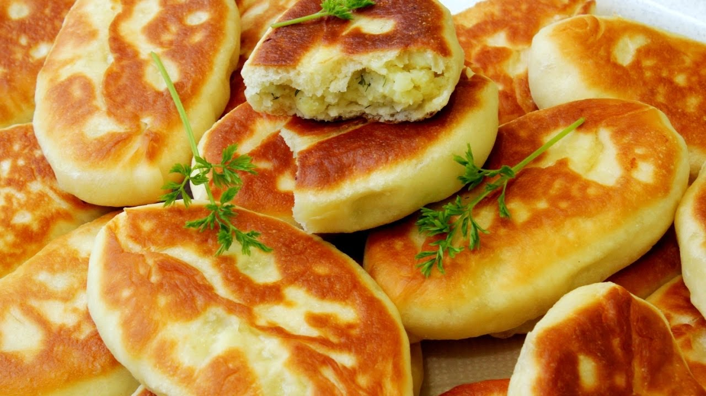

приготовление:
-
Заранее приготовить начинку. Поставить вариться картошку. Пожарить лук на сливочном масле, минут 15 на малом огне, можно добавить бекон или грибы и еще пожарить минут 15. Сделать пюре из картошки, смешать с зажаркой, добавить по вкусу соли и перца.
-
Для теста в миску влить 250 мл. теплого молока, туда же отправить дрожжи (свежих 25 гр. / сухих 11 гр.), 1 ч.л. соли, 1 ст.л. сахара и 3 ст.л. масла.
-
Сюда же просеять 750 гр. муки и добавить 250 мл. кипятка.
-
Размешать сначала деревянной ложкой, затем руками. Ничего, если тесто липнет - так и должно быть.
-
Припылить мукой рабочую поверхность, скатать тесто в колбаску, разделить на кусочки. Каждый кусочек раскатывать, класть в центр начинку и закрывать.
-
Обжаривать на сковороде с маслом с каждой стороны до румяности.